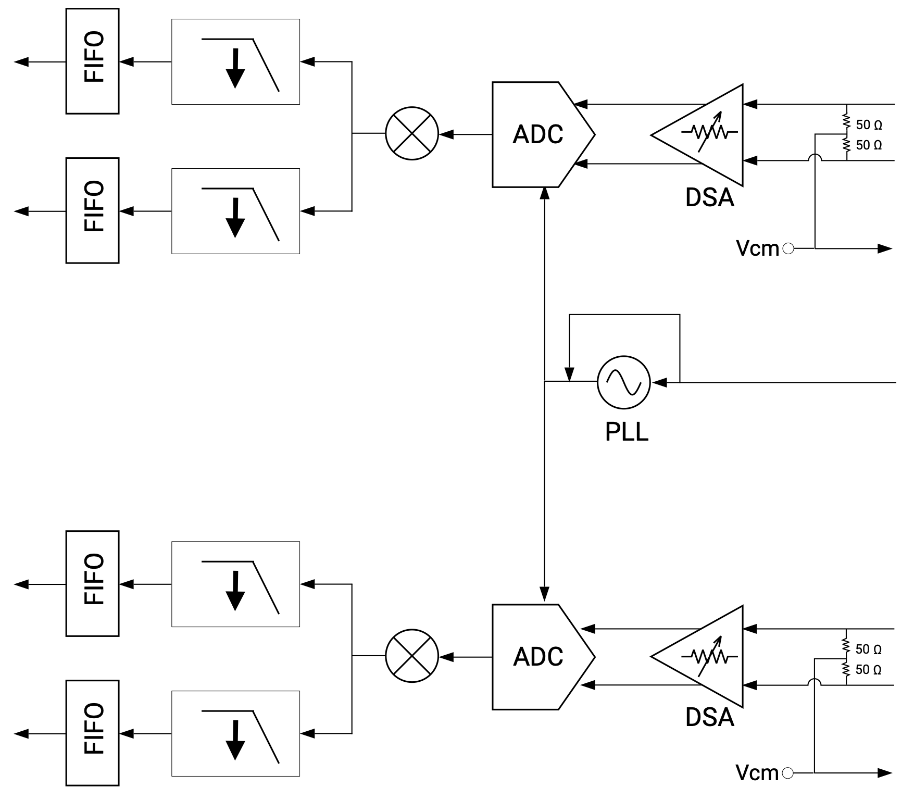
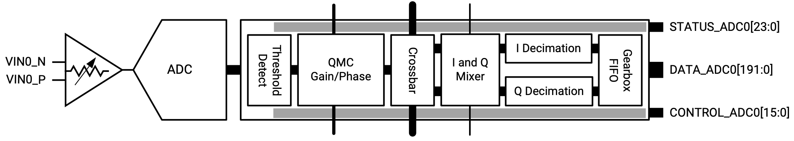
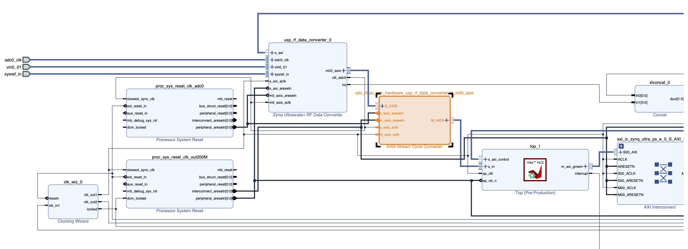

9.2. ADC Interface#
As discussed in Section 1.1.2, the XCZU48DR RFSoC device contains hardened data converter blocks and PLLs to support the ADCs (and DACs) on chip:

Fig. 9.1 Block diagram of an ADC tile with supporting data converter and PLL blocks on the XCZU48DR RFSoC device (image taken from [AMD-Xilinx23c])#
The ADC portion of the data converter block implements a number of DSP functions as shown in the figure below, including:

Fig. 9.2 Block diagram of the ADC portion of the data converter block on the XCZU48DR RFSoC device (image taken from [AMD-Xilinx23c])#
a signal magnitude detector,
a quadrature modulator correction (QMC) block,
a Digital Down Converter (DDC) that consists of
coarse frequency mixers and a numerically controlled oscillator (NCO), and
signal decimators with aliasing filters.
All these DSP function components can be configured to implements standard Nyquist sampling (in the first Nyquist zone) of a real-valued baseband signal as discussed in Section 9.1.1 and second Nyquist-zone sampling of a real-valued bandpass signal as discussed in Section 9.1.3. Other modes of sampling, including sampling of complex-valued baseband and bandpass signals from the in-phase (I) and quadrature (Q) signal paths, can also be implemented using the hardened DSP functions.
The configuration of the DSP functions can be set when building the Vitis extensible platform using the RFDC IP block [AMD-Xilinx23c]. In
rfsoc_adc_vitis_platform, the configuration is chosen to implement Nyquist sampling of a real-valued baseband signal.The sampling rate of the ADCs is set based on the frequency of the stable reference clock input provided on the RFSoC 4x2 board. In
rfsoc_adc_vitis_platform, it is set to \(4.9152\) Gsps. The DDC in the data converter block allows us to decimate the ADC output in order to equivalently lower the sampling rate (see my DSP notes for a more detailed discussion). Inrfsoc_adc_vitis_platform, the decimation factor is set to 16, resulting in the sampling rate of \(307.2\) Msps reported in Section 1.3.3.The ADCs on XCZU48DR RFSoC device have a resolution of 14 bits (see Section 1.1.2). Each ADC sample is provided as a 16-bit fixed-point/integer value. The data converter block contains FIFOs to provide an AXI4 stream (
axis) interface for our DSP kernel to access the stream of samples. Up to 12 samples (see the 192-bit wide data path in Fig. 9.2) can be packed together as the basic unit of theaxisstream to reduce the clock rate required to support theaxisinterface. Inrfsoc_adc_vitis_platform, eight samples are packed into a chunk foraxisstreaming, requiring a minimum clock rate of \(38.4\) MHz for theaxisinterface. The data converter block can be configured to provide a reference clock at that frequency to drive theaxisinterface as shown in Fig. 1.6.Below is a simple HLS kernel example that reads chunks of samples from the
axisinterface of the data converter block and then stores them in the global memory:Kernel header (
stream_to_mem.h):#include <ap_fixed.h> #include <hls_stream.h> #include <tuple> #define MAX_N 8192 // Number of samples #define C 8 // Number of samples per chunk #define MAX_NC MAX_N/C // Basic ADC sample type typedef ap_fixed<16,1> d_t; // Chuck type = array of C samples typedef std::array<d_t,C> c_t; extern "C" void top(hls::stream<c_t> &s_in, c_t *out, unsigned long N);
Kernel:
#include "stream_to_mem.h" #include <assert.h> void store(hls::stream<c_t> &in, c_t *out, unsigned long N) { assert(N%4==0); Write_Loop: for (unsigned long n=0; n<N; n++) { #pragma HLS loop_tripcount max=MAX_NC out[n] = in.read(); } } extern "C" { void top(hls::stream<c_t> &s_in, c_t *out, unsigned long N) { #pragma HLS interface mode=axis port=s_in depth=MAX_NC #pragma HLS interface mode=m_axi port=out depth=MAX_NC #pragma HLS dataflow store(s_in, out, N/C); } }
The 16-bit samples from the data converter are casted into the
ap_fixed<16,1>type.The same technique of chunking using the
std::arrayclass in Section 8.3.2 is employed here.A
hls::streaminput argument is employed in the top-level functiontop()to interface with theaxissample stream provided by the data converter block.Chunks of fixed-point samples are stored in the global memory as the output of the kernel.
Host code snippet:
// Compute the size of array in bytes size_t size_in_bytes = NC*sizeof(c_t); // Instantiate host input and output vectors std::vector<c_t, aligned_allocator<c_t> > x(NC); // These commands will allocate memory on the Device // and link to host pointers OCL_CHECK(err, cl::Buffer x_buf(context, CL_MEM_USE_HOST_PTR|CL_MEM_WRITE_ONLY, size_in_bytes, x.data(), &err)); // set the kernel Arguments unsigned long numsamps = N; OCL_CHECK(err, err = krnl.setArg(1, x_buf)); OCL_CHECK(err, err = krnl.setArg(2, numsamps)); OCL_CHECK(err, err = q.enqueueTask(krnl)); // Transfer output from gloabl to host memory OCL_CHECK(err, err = q.enqueueMigrateMemObjects({x_buf}, CL_MIGRATE_MEM_OBJECT_HOST)); OCL_CHECK(err, err = q.finish()); std::cout << "Done getting signal sample from ADC.\n"; // save output samples to file std::cout << "Writing data to signal.txt\n"; std::ofstream file; file.open("signal.txt"); for (int n=0; n<N; n++) file << x[n/C][n%C] << std::endl; file.close();
Only the top-level function arguments of the output global memory buffer and the number of samples to capture are set in the host code.
Explicit connection of the
hls::streamargument of the top-level function to theaxisinterface of the data converter block must be specified in the kernel configuration file in Vitis (see Lab 9).If the HLS kernel and the data converter block’s
axisinterface are under different clock domains (e.g., inrfsoc_adc_vitis_platform, the HLS kernel is drived by the \(200\) MHz platform clock while the data converter block’saxisinterface clock is at \(38.4\) MHz as discussed above), Vitis will automatically insert an AXI4 stream clock converter to interface between the kernel andaxisinterface as shown:

Fig. 9.3 Block diagram showing connection between the HLS kernel and the data converter’s
axisinterface inrfsoc_adc_vitis_platform.#The same chucking approach can also be applied to any DSP kernel that is connected to the data converter block’s
axisinterface, using the ADC sample stream as a signal source. For example, one may modify the direct-form FIR filter implementation discussed in Section 7.2.1 as below to filter the ADC samples directly from the data converter block:Header (
fir.h):#include <ap_fixed.h> #include <hls_stream.h> #include <tuple> #define MAX_N 8192 // Number of samples #define C 8 // Number of samples per chunk #define MAX_NC MAX_N/C #define L 33 // FIR length // Basic ADC sample type typedef ap_fixed<16,1> din_t; // Chuck type = array of C samples typedef std::array<din_t,C> cin_t; // Filter output types typedef ap_fixed<21,2> dout_t; typedef std::array<dout_t,C> cout_t; extern "C" void top(hls::stream<cin_t> &s_in, cout_t *out, unsigned long N);
Kernel:
#include "fir.h" #include <assert.h> const dout_t b[L]={ 0.007083263382862, -0.000281667903341, -0.002870264687538, -0.006818591414896, -0.011318092128126, -0.015100299270572, -0.016580950620816, -0.014181642971131, -0.006627769384691, 0.006688932062321, 0.025437031747426, 0.048285032105601, 0.072982469926792, 0.096680432171055, 0.116360747833188, 0.129388363148553, 0.133943224196236, 0.129388363148553, 0.116360747833188, 0.096680432171055, 0.072982469926792, 0.048285032105601, 0.025437031747426, 0.006688932062321, -0.006627769384691, -0.014181642971131, -0.016580950620816, -0.015100299270572, -0.011318092128126, -0.006818591414896, -0.002870264687538, -0.000281667903341, 0.007083263382862 }; void fir(hls::stream<cin_t> &in, hls::stream<cout_t> &out, unsigned long N) { din_t w[L] = {}; #pragma HLS array_partition variable=w type=complete chunk_loop: for (unsigned long n=0; n<N; n++) { #pragma HLS loop_tripcount max=MAX_NC cin_t chunk_in = in.read(); cout_t chunk_out; #pragma HLS array_partition variable=chunk_in type=complete #pragma HLS array_partition variable=chunk_out type=complete each_chunk: for (int j=0; j<C; j++) { #pragma HLS unroll factor=2 shift_loop: for (int k=L-1; k>0; k--) { w[k] = w[k-1]; } // Read in new chunk from in w[0] = chunk_in[j]; // Calculate output sample dout_t y = 0.0; //#pragma HLS bind_op variable=y op=mul impl=fabric latency=1 fir_loop: for (int k=0; k<L; k++) { #pragma HLS unroll y += b[k]*w[k]; } chunk_out[j] = y; } // Write to out out.write(chunk_out); } } void store(hls::stream<cout_t> &buf, cout_t *out, unsigned long N) { assert(N%2==0); Write_Loop: for (unsigned long n=0; n<N; n++) { #pragma HLS loop_tripcount max=MAX_NC out[n] = buf.read(); } } extern "C" { void top(hls::stream<cin_t> &s_in, cout_t *out, unsigned long N) { #pragma HLS interface mode=axis port=s_in depth=MAX_NC #pragma HLS interface mode=m_axi port=out depth=MAX_NC hls::stream<cout_t> buf; #pragma HLS dataflow fir(s_in, buf, N/C); store(buf, out, N/C); } }
The loop
each_chunkis unrolled with a factor of 2 to achieve a tradeoff between throughput and PL resource usage.It can be verified from Vitis that the throughput for this FIR filter implementation is slightly below 2 samples per clock cycle. At the platform clock rate of \(200\) MHz, this translates to about \(400\) Msps per second, high enough to support real-time processing of the stream of samples at the rate of \(307.2\) Msps.
{kind=link}
{kind=link}
{kind=link}